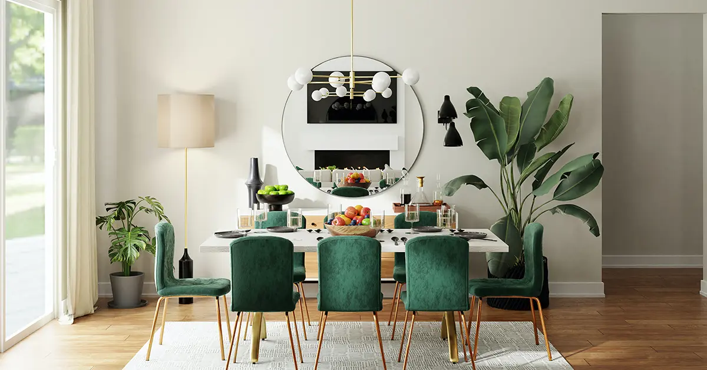

10 zlatnih pravila za opremanje doma
A쬿riran 21 Jula, 2023
sredikucu.rs
Novo

Vaš dom je vaše utočište, zato se pobrinite da je mesto u koje volite da dolazite. Bilo da ste tek počeli ili tra쬴te način da osve쬴te svoj trenutni enterijer, ovih 10 zlatnih pravila će vam pomoći da kreirate prostor koji je i elegantan i funkcionalan.
Pročitaj članak